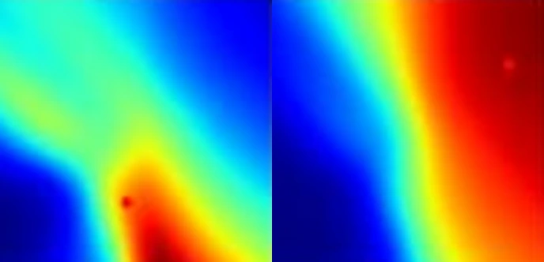
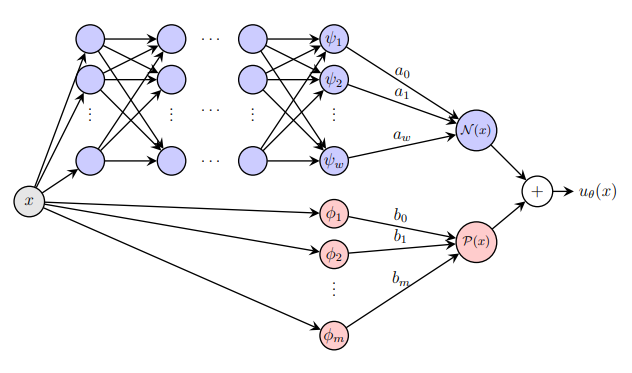

Scientific ML & numerical methods
I led the design and evaluation of HiRefPOU and built hybrid models for Darcy flow, Poisson, and Allen–Cahn problems.
Localized operator learningmcooley220 [at] gmail [dot] com
Scientific machine learning · Salt Lake City, UT
I build machine learning models for physical systems, like predicting how water moves through porous materials with different permeabilities.
I earned my Ph.D. in Computing at the University of Utah. I’m interested in industry Research Scientist, Applied Scientist, and R&D roles.

Featured research · TMLR 2026
I led the design, training, and evaluation of a neural operator that learns where to place local experts and blends their predictions smoothly.

I led the design and evaluation of HiRefPOU and built hybrid models for Darcy flow, Poisson, and Allen–Cahn problems.
Localized operator learningI built Python and C++ pipelines for model training and evaluation, and wrote custom C++ differentiation rules for the fixed Legendre basis in PANNs.
I ran baseline comparisons, hyperparameter studies, and ablations on GPU clusters with SLURM.
Research experience
Neural operators, physics-informed models, and earlier work in graph algorithms.